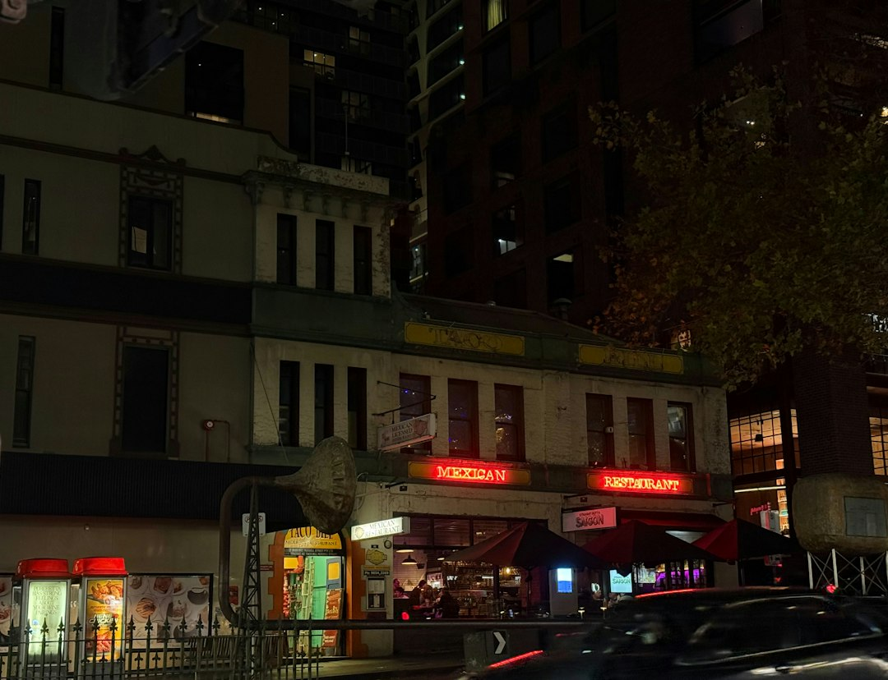

Best Melbourne Restaurants presents 9 provider types, with cross-checked listings, reviews, photos and direct contact options. The source page highlights categories including Asian, casual and family, fine dining, Italian, modern Australian, seafood, steak and grill, vegetarian and vegan. Featured examples include venues in Melbourne, South Melbourne, Fitzroy North and Docklands, with published review counts ranging from 23 to 3246 on the listed sample cards.
For diners comparing restaurants melbourne options, the useful starting point is category fit, location, review context, booking needs and whether the venue information is current enough for the occasion.
Restaurants Melbourne Explained
Best Melbourne Restaurants is presented as a guide for discovering dining venues across Melbourne, with cross-checked business listings, reviews, photos, service comparisons and quote or contact pathways. Treat it as a starting point for shortlisting, then confirm the current details with the venue before making plans.
The listed categories are useful because they separate different dining intentions. A casual family meal asks different questions from a fine dining booking, a seafood takeaway, a steak dinner or a vegetarian and vegan choice. The strongest comparison starts with the occasion, then moves to menu fit, suburb convenience, review pattern and reservation needs.
- For a quick meal: check the category, location and whether the listing suggests takeaway, casual dining or direct contact.
- For a planned dinner: look for menu information, reservation pathways and any private dining or function notes.
- For dietary preference: begin with the vegetarian and vegan category, then verify the current menu with the venue.
What the featured examples actually tell you
The source page shows featured venue cards rather than a complete ranking. Osteria Ilaria appears as an Italian venue in Melbourne with a 4.6 rating and 2469 reviews. Peko Peko appears in South Melbourne with Taiwanese cuisine, a 4.5 rating and 1438 reviews. Home Kitchen & Bar appears as a modern Australian venue in Melbourne with a 4.5 rating and 23 reviews.
Those figures are useful, but they should not be treated as the whole decision. A venue with a larger review count may give more confidence about consistency, while a smaller review count may still be relevant if the category, location and booking style suit the meal. Krabby's Crab Boil is shown in Docklands with a 4.6 rating and 3246 reviews, while The Seafood Shak appears in Fitzroy North with a 4.8 rating and 129 reviews. The better question is whether the venue type matches the occasion.
Choosing by suburb and occasion
Location filters matter when they reduce friction, not when they become a list for its own sake. The source page points users toward popular location and category combinations, including Asian restaurants in Richmond and Carlton, vegetarian and vegan choices in St Kilda, Richmond, Collingwood, Fitzroy and Carlton, seafood in Northcote, South Yarra, Docklands and Southbank, and steakhouses in Glen Waverley.
Use those place signals to shape a practical plan. A Southbank or Docklands option may suit a waterfront or city-adjacent meal, while Fitzroy North, Collingwood or Carlton may be part of a neighbourhood night out. The guide does not supply live availability, trading hours or current menu prices, so those details need a direct check before you book, travel or organise a group.
For a related overview of Melbourne restaurant categories and comparison cues, use the sibling guide as a second reading path before narrowing the shortlist.
Questions to ask before booking or contacting a venue
A listing can narrow the field, but the final choice often depends on details that change. The source page says some venue websites provide information about menus, reservations and private dining or functions, and advises checking official venue information for current menus, trading details and booking availability. That is the right habit for any occasion where timing, seating or dietary needs matter.
- Is the current menu suitable for the group, including vegetarian, vegan or seafood preferences?
- Does the venue take reservations, and does the booking suit the planned date and party size?
- Is private dining or a function space relevant, or is a standard table enough?
- Are reviews describing the same kind of meal you are planning, such as takeaway, casual dining, special occasion dining or a group booking?
- Is direct contact needed for a quote, event enquiry or menu clarification?
The most useful reviews are specific. Look for comments about the meal type, service context and consistency rather than relying only on the rating number.
Who this applies to
This guide is for diners who want an efficient way to compare Melbourne venues before committing to a booking. It fits people planning casual meals, family outings, Italian dinners, modern Australian meals, seafood choices, steak and grill nights, vegetarian or vegan dining, and function enquiries where the category filter can save time.
It is less useful for someone who needs guaranteed live information from a single venue. The source listings can point you toward options, but live menus, trading details, reservation availability and function arrangements sit with the venues themselves. Use the directory to build a shortlist, then confirm the details directly.
Business owners may also notice the listing pathway. The source page says businesses can claim a free listing or upgrade to Pro for priority placement, photos and lead tracking. Diners should recognise that listed visibility and dining suitability are not the same thing, so the decision still belongs in the detail of the venue, menu and occasion.
- Start with the occasion. Decide whether the meal is casual, family-focused, fine dining, takeaway, a function enquiry or a cuisine-led booking.
- Filter by category. Use the listed provider types to remove venues that do not match the meal style or dietary preference.
- Read the venue card. Compare the suburb, category, rating, review count and description before adding a venue to the shortlist.
- Check live details. Confirm current menus, trading details, reservations and availability with the venue before relying on the listing.
- Contact directly. Use the direct contact or quote pathway when the booking needs clarification, group details or function information.
| Decision point | Directory signal | Final check |
|---|---|---|
| Cuisine fit | Category pages such as Italian, Asian, seafood, steak and grill, modern Australian, casual and family, vegetarian and vegan | Confirm the current menu with the venue |
| Location fit | Suburb and area prompts shown across popular location links | Check travel time and booking availability |
| Confidence signal | Ratings, review counts and listing descriptions | Read the review detail, not only the score |
| Occasion fit | Notes about reservations, private dining or functions where supplied | Contact the venue for current arrangements |
Common questions
Is the guide a ranking of the best venues? The source page presents featured providers, category browsing and review information. It should be read as a comparison guide, not as a fixed ranking of every venue in Melbourne.
Can I rely on the listed menu or booking information? Use the listing as a pointer, then check the venue's current menu, trading details and booking availability directly. The source page itself advises checking official venue information for current details.
Which categories are included? The source page lists Asian, casual and family, fine dining, Italian, modern Australian, restaurants, seafood, steak and grill, and vegetarian and vegan categories.
Does it cost diners to browse or request contact? The source page says users can browse listings, read reviews, compare services and get quotes for free.
This guide covers practical ways to compare Melbourne dining listings, categories, reviews, location signals and booking checks before choosing a venue.